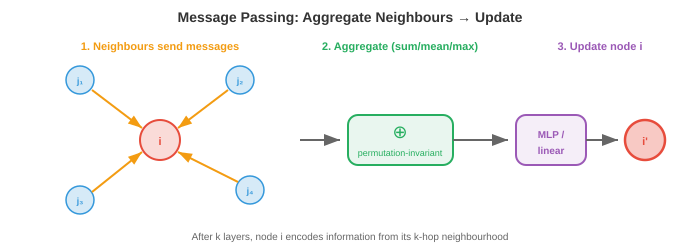
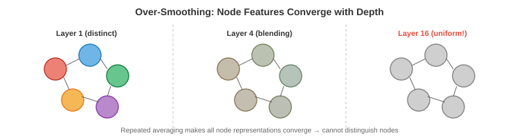

图神经网络¶
图神经网络通过在连接节点之间传递消息来学习图结构数据。本章涵盖消息传递框架、GCN、GraphSAGE、GIN、过平滑、图池化以及节点/边/图级别的任务；支撑分子性质预测、社交网络分析和推荐系统的核心架构。
-
在前面的文件中，我们建立了数学基础：几何深度学习（文件1）告诉我们利用对称性，图论（文件2）提供了节点、边和邻接的语言。现在我们构建直接在图（graph）上操作的神经网络。
-
核心挑战：图数据是不规则的。与图像（固定网格）或序列（固定顺序）不同，图具有可变数量的节点、可变的连通性，并且没有规范的节点顺序。用于图的神经网络必须处理所有这些情况，同时保持置换等变性（重新标记节点不应改变输出）。
消息传递框架¶
-
几乎所有的GNN都遵循同样的模式，称为消息传递（也称为邻域聚合）。这个想法简单而优雅：每个节点通过从邻居收集信息来更新其表示。
-
在每个层 \(l\)，每个节点 \(i\) 做三件事：
- 消息：节点 \(i\) 的每个邻居 \(j\) 基于其当前特征计算一条消息 \(\mathbf{m}_{j \to i}\)。
- 聚合：节点 \(i\) 收集所有传入消息，并使用置换不变函数（求和、均值或取最大值）将它们组合。
- 更新：节点 \(i\) 将聚合的消息与其自身特征结合，产生一个新的表示。
-
形式上：
- 其中 \(\mathcal{N}(i)\) 是节点 \(i\) 的邻居集合，\(\bigoplus\) 是一个置换不变的聚合操作（求和、均值、取最大值），\(\phi\) 是消息函数，\(\psi\) 是更新函数，\(\mathbf{e}_{ij}\) 是可选的边特征。

-
聚合操作 \(\bigoplus\) 必须是置换不变的（邻居处理的顺序无关紧要），以确保整个函数是置换等变的。这直接实现了文件1中的对称性原理。
-
经过 \(k\) 层消息传递后，每个节点的表示编码了其 \(k\) 跳邻域的信息：所有在 \(k\) 条边内可达的节点。第1层看到直接邻居，第2层看到邻居的邻居，依此类推。这就是局部信息传播以建立全局理解的方式。
-
GNN的感受野随深度增长，就像CNN的感受野随层数增长一样（第8章）。但与规则网格上的CNN不同，感受野的形状根据图拓扑结构在每个节点上有所不同。
图卷积网络（GCN）¶
-
GCN（Kipf & Welling，2017）是基础性的GNN架构。它将谱域图卷积（来自文件2）简化为一个优雅、高效的公式。
-
从谱域卷积 \(g_\theta \star \mathbf{x} = U \, \text{diag}(\hat{g}_\theta) \, U^T \mathbf{x}\) 出发，Kipf和Welling用一阶切比雪夫多项式近似谱域滤波器，这完全避免了计算特征分解。简化后，逐层更新变为：
-
其中：
- \(H^{(l)} \in \mathbb{R}^{n \times d}\) 是第 \(l\) 层的节点特征矩阵
- \(W^{(l)} \in \mathbb{R}^{d \times d'}\) 是可学习的权重矩阵
- \(\hat{A} = \tilde{D}^{-1/2} \tilde{A} \tilde{D}^{-1/2}\) 是带自环的对称归一化邻接矩阵
- \(\tilde{A} = A + I\) 添加了自环（因此每个节点也接收自己的消息）
- \(\tilde{D}\) 是 \(\tilde{A}\) 的度矩阵
- \(\sigma\) 是一个非线性激活函数（ReLU，如第6章所述）
-
矩阵乘法 \(\hat{A} H^{(l)}\) 是聚合步骤：对于每个节点，它计算其邻居特征（加上自身特征，通过自环）的加权平均。权重矩阵 \(W^{(l)}\) 是可学习的变换，在所有节点间共享。激活函数增加了非线性。
-
这非常简单：它只是矩阵乘法后接一个学习到的线性映射和激活函数。整个GCN层可以用一行代码实现。通过 \(\tilde{D}^{-1/2}\) 的归一化防止具有许多邻居的节点占主导地位：高度节点的消息被按比例缩小。
-
在消息传递框架中，GCN使用：
- 消息：\(\phi(\mathbf{h}_j) = \mathbf{h}_j\)（只发送你的特征）
- 聚合：归一化和（按度加权）
- 更新：线性变换 + 激活函数
GraphSAGE¶
-
GCN是直推式的：它在训练时需要完整的图，无法处理新出现的未知节点。如果新用户加入社交网络，GCN必须对整个图重新训练。GraphSAGE（Hamilton等，2017）通过归纳式方法解决了这个问题。
-
关键思想是邻域采样：不是使用所有邻居，而是采样一个固定大小的子集。这使得计算独立于完整的图结构，并允许推广到未见过的节点和图。
-
节点 \(i\) 的GraphSAGE更新：
-
其中 \(\mathcal{S}(i)\) 是一个采样的邻居子集（例如，从500个邻居中随机采样10个）。CONCAT操作显式地将节点自身的特征与聚合后的邻居特征分开，让网络学习"自身"和"邻域"的不同变换。
-
GraphSAGE支持多种聚合函数：
- 均值（Mean）：\(\text{AGG} = \frac{1}{|\mathcal{S}|} \sum_{j \in \mathcal{S}} \mathbf{h}_j\)（简单，有效）
- LSTM：将采样的邻居通过LSTM（但这引入了顺序依赖，一定程度上违反了置换不变性）
- 池化（Pool）：\(\text{AGG} = \max(\{\sigma(W_{\text{pool}} \mathbf{h}_j + \mathbf{b})\})\)（非线性变换后取最大值）
-
采样策略使GraphSAGE可扩展到非常大的图。训练使用节点的小批量：对于每个目标节点，在第1层采样 \(k_1\) 个邻居，然后对于其中每个邻居在第2层采样 \(k_2\) 个邻居。使用 \(k_1 = k_2 = 10\) 和2层，每个节点的计算树最多有 \(10 \times 10 = 100\) 个节点，与图的大小无关。
图同构网络（GIN）¶
-
不同的GNN架构具有不同的表达能力：它们区分结构不同之图的能力。GCN和GraphSAGE虽然在实践中有效，但理论上在能区分哪些图结构方面是受限的。
-
衡量GNN表达能力的理论工具是Weisfeiler-Lehman（WL）测试，这是一个用于测试图同构（两个图是否结构相同）的经典算法。WL测试通过将每个节点的标签与其邻居标签的多重集一起哈希，迭代地精炼节点标签。
-
GIN（Xu等，2019）被设计为具有与WL测试同等的表达能力，使其成为最强大的消息传递GNN（在消息传递的理论限制内）。关键洞察：聚合函数必须在多重集上是单射的（不同的邻居特征多重集必须产生不同的聚合值）。
-
求和聚合在多重集上是单射的（求和 \(\{1, 1, 2\}\) 得到4，而 \(\{1, 3\}\) 也得到4，但在具有足够维度的特征向量上，不同多重集的和一般而言是不同的）。均值和取最大值不是单射的：均值无法区分 \(\{1, 1\}\) 和 \(\{2, 2\}\)，取最大值无法区分 \(\{1, 2, 3\}\) 和 \(\{1, 1, 3\}\)。
-
GIN更新：
- 其中 \(\epsilon\) 是一个可学习的标量（或固定为0），MLP提供非线性、单射的映射。求和聚合保留了多重集结构，MLP可以学会区分任意两个不同的聚合值。
过平滑¶
- GNN的一个主要挑战是过平滑：随着层数增加，所有节点表示收敛到相同的值，失去区分不同节点的能力。

-
其机制是直观的。每个消息传递层将节点的特征与其邻居的特征进行平均。经过多轮平均后，每个节点已经"看到"（并混合了）其连通分量中的每个其他节点。这些特征变成了统一的平均值，相当于将图像模糊太多次直到变成纯色的图类比。
-
形式上，重复应用归一化邻接矩阵 \(\hat{A}\) 收敛到一个秩为1的矩阵（每一行都变得与图上随机游走的平稳分布成正比）。这与幂迭代收敛到主特征向量的过程相同（第2章）。
-
过平滑将GNN限制在很浅的深度（通常2-4层），而CNN和Transformer可以从几十或数百层中受益。这意味着每个节点只能看到有限的邻域，这对于需要长距离信息的任务来说是有问题的。
-
缓解方法包括：
- 残差连接（来自ResNet，第8章）：\(\mathbf{h}_i^{(l+1)} = \mathbf{h}_i^{(l+1)} + \mathbf{h}_i^{(l)}\)，保留来自较早层的信息。
- 跳跃知识（Jumping Knowledge）：拼接或注意力池化来自所有层的表示，而不仅仅是最后一层。
- DropEdge：训练期间随机移除边，减缓信息传播。
- 图Transformer（Graph Transformer）（文件4）：用全局注意力绕过局部消息传递的瓶颈。
图池化¶
-
对于图级别任务（预测整个图的属性，如分子的毒性），我们需要将所有节点表示折叠成一个单一的图级别向量。这就是图池化，是CNN中全局平均池化的图类比（第8章）。
-
最简单的方法是读出（readout）：对所有节点特征应用一个置换不变函数：
-
这就是文件1中的DeepSets聚合，应用于最终的GNN层之后。求和保留了大小信息（一个有100个节点的图会比只有10个节点的图具有更大的和），而均值对大小进行了归一化。
-
分层池化逐步粗化图，模仿CNN逐步下采样图像的方式。在每个层级，节点组被合并为"超节点"：
-
DiffPool（可微分池化）学习一个软分配矩阵 \(S^{(l)} \in \mathbb{R}^{n_l \times n_{l+1}}\)，将每个节点分配到一个簇：
-
分配矩阵由一个单独的GNN预测，使聚类变得端到端可微分。这创建了一个层次结构：原始图 → 具有较少节点的粗化图 → 更粗的图 → 单个节点（图表示）。
-
TopKPool采用更简单的方法：为每个节点学习一个标量分数，保留得分最高的 top-\(k\) 个节点，丢弃其余节点。这是一种硬选择（而非软分配），计算上比DiffPool更廉价。
异构图¶
-
截至目前的所有GNN都假设一个同构图：一种节点类型，一种边类型。但大多数现实世界的图是异构的：多种节点类型和多种边类型。知识图谱有人物节点、组织节点和位置节点，由"工作于"、"出生于"和"位于"边连接。推荐系统有用户节点和物品节点，由"已购买"、"已浏览"和"已评价"边连接。
-
异构图有一个模式（也称为元图），定义了允许的节点类型和边类型。每个边类型连接特定的源类型到特定的目标类型。例如，"工作于"连接 Person → Organisation。
-
关系GCN（R-GCN）（Schlichtkrull等，2018）通过为每种边类型使用单独的权重矩阵来处理异构边：
-
其中 \(\mathcal{R}\) 是边类型的集合，\(\mathcal{N}_r(i)\) 是通过关系 \(r\) 连接到节点 \(i\) 的邻居集合，\(W_r\) 是关系 \(r\) 特有的权重矩阵。自连接 \(W_0\) 单独处理节点自身的特征。
-
问题：当关系类型很多时，参数数量爆炸（每种关系一个 \(d \times d\) 矩阵）。R-GCN通过基分解缓解这一问题：\(W_r = \sum_{b=1}^{B} a_{rb} V_b\)，其中 \(V_b\) 是共享的基矩阵，\(a_{rb}\) 是每个关系的标量系数。这类似于低秩分解（第2章）：关系特定的矩阵生活在一个低维子空间中。
-
异构图表Transformer（HGT）（Hu等，2020）将注意力机制应用于异构图。关键洞察：注意力应同时依赖于节点类型和连接它们的边类型。HGT为查询、键和值使用类型特定的投影矩阵：
-
其中 \(\tau(i)\) 是节点 \(i\) 的类型，\(\phi(i,j)\) 是它们之间的边类型。这确保了模型对不同的关系类型使用不同的注意力权重：一篇论文关注其作者时，应使用与关注其参考文献时不同的注意力权重。
-
基于元路径的方法定义通过模式的含义路径（例如，作者 → 论文 → 作者表示合著关系），并沿着这些路径聚合信息。HAN（异构图注意力网络）在两个层次应用注意力：在每个元路径内（沿此路径哪些邻居重要？）和跨元路径（哪些关系模式重要？）。
链接预测与知识图谱补全¶
-
链接预测提出的问题是：给定现有边，哪些缺失的边可能存在？这是知识图谱补全（预测缺失的事实）、推荐（预测用户会喜欢哪些物品）和社交网络分析（预测未来的友谊）的核心任务。
-
基于嵌入的方法为每个实体学习一个向量，为每个关系学习一个变换，然后通过实体和关系的匹配程度对潜在边进行评分：
-
TransE将关系建模为嵌入空间中的平移：如果 \((h, r, t)\) 是一个有效的三元组（头实体，关系，尾实体），那么 \(\mathbf{h} + \mathbf{r} \approx \mathbf{t}\)。评分函数为 \(f(h, r, t) = -\|\mathbf{h} + \mathbf{r} - \mathbf{t}\|\)。直观地说，关系向量在嵌入空间中将头实体"移动"到尾实体。
-
RotatE将关系建模为复空间中的旋转：\(\mathbf{t} = \mathbf{h} \circ \mathbf{r}\)，其中 \(\circ\) 是逐元素复数乘法，\(|\mathbf{r}_i| = 1\)（单位复数就是旋转）。这可以建模TransE无法处理的对称性、反对称性、反转和复合模式。
-
ComplEx使用复数值嵌入和埃尔米特点积，使其能够建模非对称关系（如果A是B的老板，B不是A的老板）。
-
基于GNN的链接预测通过消息传递计算节点嵌入，然后使用端点嵌入对边进行评分。这结合了GNN的结构推理能力和嵌入方法的关系建模能力。GNN编码器捕获了单嵌入方法所遗漏的多跳邻域结构。
任务类型¶
-
GNN解决三类任务：
-
节点级别任务：为每个节点预测一个属性。示例：对社交网络中的用户进行分类（机器人还是人类），预测相互作用网络中每个蛋白质的功能，半监督节点分类（标记少数节点，预测其余节点）。输出是节点嵌入 \(\mathbf{h}_i^{(L)}\) 经过一个分类器。
-
边级别任务：为每条边预测一个属性或预测边是否存在。示例：链接预测（这两个用户会成为朋友吗？），知识图谱补全（这个关系在这些实体间成立吗？），药物-药物相互作用预测。输出通常使用两个端点节点的嵌入：\(\hat{y}_{ij} = f(\mathbf{h}_i, \mathbf{h}_j)\)，其中 \(f\) 是点积、拼接+MLP或其他组合。
-
图级别任务：为整个图预测一个属性。示例：分子性质预测（这个分子有毒吗？），图分类（这个社交网络是机器人网络吗？），图生成（设计一个具有期望性质的分子）。输出使用图池化产生 \(\mathbf{h}_G\)，然后进行分类或回归。
编程任务（使用CoLab或notebook）¶
-
使用归一化邻接矩阵从头实现一个单层GCN。应用于一个小型图，观察节点特征如何被平滑。
import jax import jax.numpy as jnp # 图：5个节点，简单链带分支 A = jnp.array([[0, 1, 0, 0, 0], [1, 0, 1, 0, 0], [0, 1, 0, 1, 1], [0, 0, 1, 0, 0], [0, 0, 1, 0, 0]], dtype=float) # 添加自环 A_hat = A + jnp.eye(5) D_hat = jnp.diag(A_hat.sum(axis=1)) D_inv_sqrt = jnp.diag(1.0 / jnp.sqrt(A_hat.sum(axis=1))) A_norm = D_inv_sqrt @ A_hat @ D_inv_sqrt # 节点特征：one-hot 单位阵 H = jnp.eye(5) # 权重矩阵（随机初始化） rng = jax.random.PRNGKey(0) W = jax.random.normal(rng, (5, 3)) * 0.5 # GCN层：H' = ReLU(A_norm @ H @ W) H_new = jax.nn.relu(A_norm @ H @ W) print("原始特征（one-hot）:") print(H) print("\n经过GCN层后:") print(jnp.round(H_new, 3)) print("\n注意：连接的节点现在具有相似的表示") -
实现具有求和聚合（GIN风格）和均值聚合（GCN风格）的消息传递。展示求和能区分均值无法区分的多重集。
import jax.numpy as jnp # 两个具有相同均值的不同邻居多重集 # 节点A：邻居特征为 [1, 1, 1, 1] （四个邻居，都是1） # 节点B：邻居特征为 [2, 2] （两个邻居，都是2） neighbours_A = jnp.array([[1.0], [1.0], [1.0], [1.0]]) neighbours_B = jnp.array([[2.0], [2.0]]) # 均值聚合 mean_A = neighbours_A.mean(axis=0) mean_B = neighbours_B.mean(axis=0) print(f"均值 A: {mean_A}, 均值 B: {mean_B}, 相同: {jnp.allclose(mean_A, mean_B)}") # 求和聚合 sum_A = neighbours_A.sum(axis=0) sum_B = neighbours_B.sum(axis=0) print(f"求和 A: {sum_A}, 求和 B: {sum_B}, 相同: {jnp.allclose(sum_A, sum_B)}") print("\n求和能区分这些多重集；均值不能！") -
演示过平滑。重复应用归一化邻接矩阵，观察节点特征收敛。
import jax.numpy as jnp import matplotlib.pyplot as plt # 随机图 A = jnp.array([[0,1,1,0,0,0], [1,0,1,0,0,0], [1,1,0,1,0,0], [0,0,1,0,1,1], [0,0,0,1,0,1], [0,0,0,1,1,0]], dtype=float) A_hat = A + jnp.eye(6) D_inv_sqrt = jnp.diag(1.0 / jnp.sqrt(A_hat.sum(axis=1))) A_norm = D_inv_sqrt @ A_hat @ D_inv_sqrt # 初始特征：每个节点各不相同 H = jnp.array([[1,0], [0,1], [1,1], [-1,0], [0,-1], [-1,-1]], dtype=float) distances = [] for k in range(20): H = A_norm @ H # 衡量特征的区别程度（节点间的标准差） spread = jnp.std(H, axis=0).mean() distances.append(float(spread)) plt.plot(distances, "o-") plt.xlabel("消息传递轮数") plt.ylabel("特征分散度（节点间标准差）") plt.title("过平滑：特征随深度增加而收敛") plt.show()